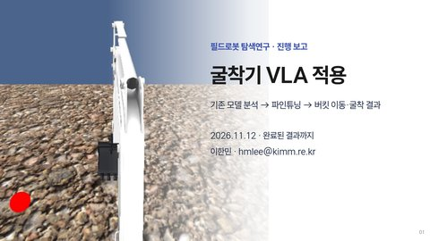
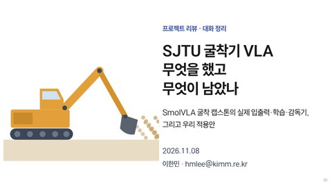
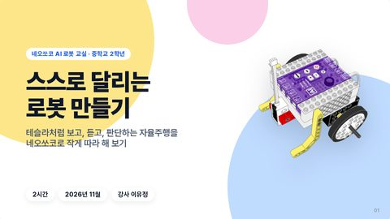
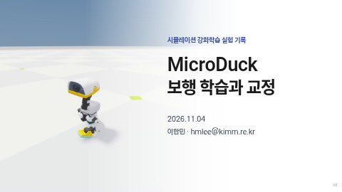
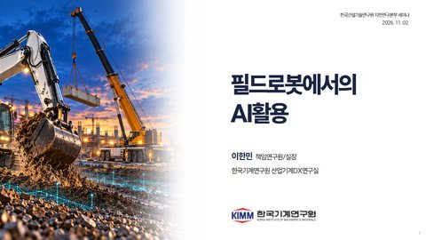
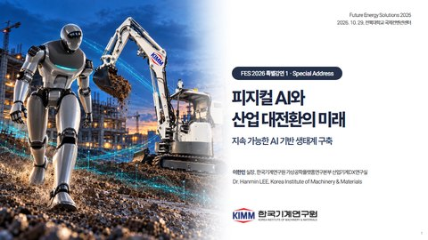
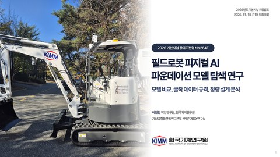

TALKS · SLIDES
발표 슬라이드
세미나·강연·보고에서 쓴 덱과, 공부하며 정리한 덱의 완성본을 날짜순으로 모았습니다.
제목을 누르면 덱이 열립니다.
2026
-
금

발표용필드로봇 탐색연구 · 팀 내 진행 보고
굴착기 VLA — 무엇을 해봤고 무엇이 남았나
내려받기 PDF
-
일

개인 정리SJTU Excavator VLA · 프로젝트 리뷰 대화 정리
SJTU 굴착기 VLA — 무엇을 했고 무엇이 남았나
-
토

발표용네오쏘코 AI 로봇 교실 · 중학교 2학년 · 강사 이유정
스스로 달리는 로봇 만들기 — 테슬라처럼, 네오쏘코로
-
수

개인 정리MicroDuck · Isaac Lab 강화학습 실험
MicroDuck 보행 학습과 교정
내려받기 PDF
-
월

발표용한국건설기술연구원 지반연구본부 세미나
필드로봇에서의 AI활용
-
목

발표용FES 2026 특별강연 1 · 전북대학교 국제컨벤션센터
피지컬 AI와 산업 대전환의 미래
-
화

발표용2026년도 기본사업 최종발표 · 한국기계연구원 R1동 대회의실 · 11/18 발표
필드로봇 피지컬 AI 파운데이션 모델 탐색 연구